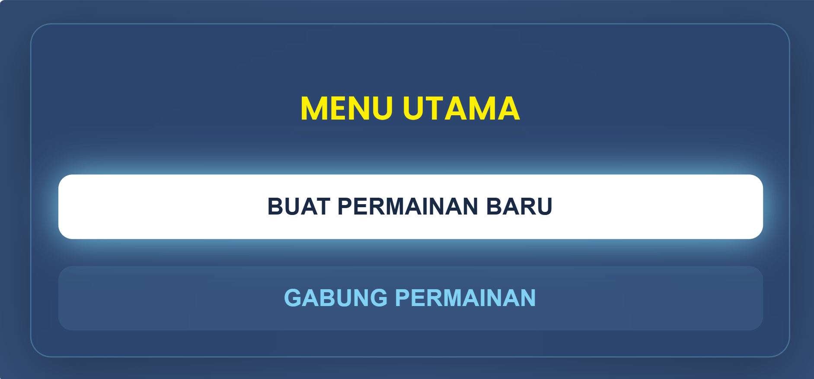
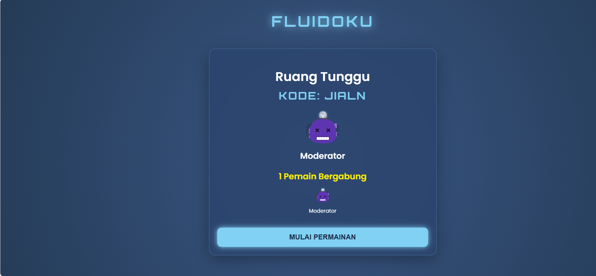
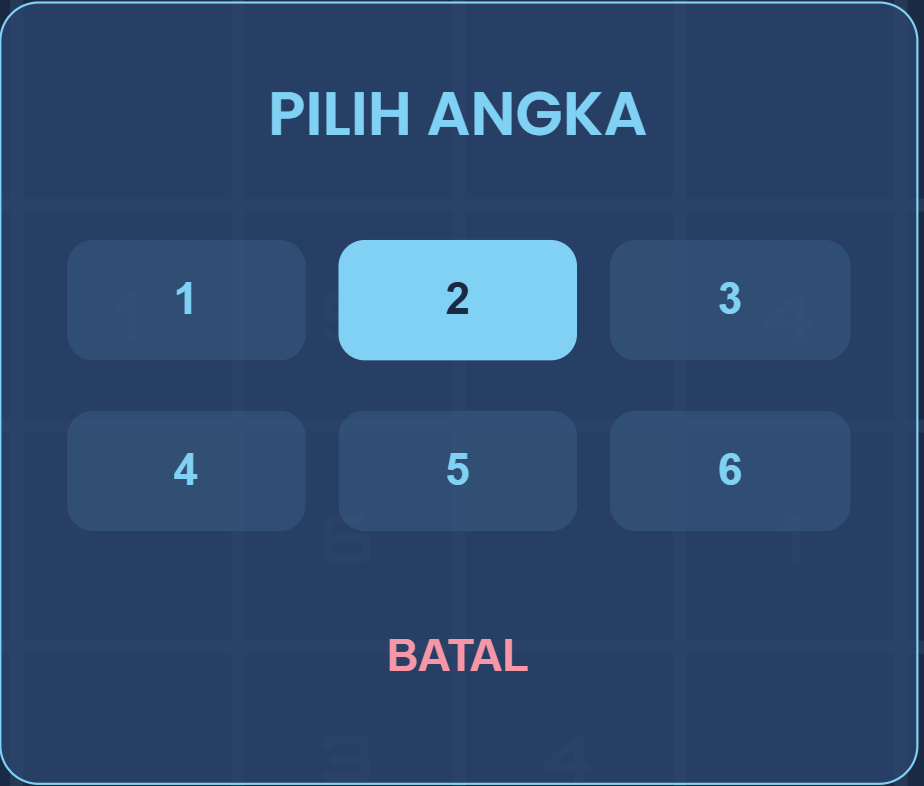
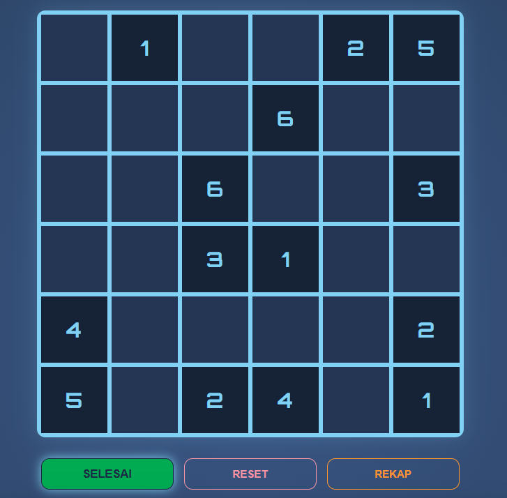

Panduan Host
Begitu memilih mode ini, Anda akan membuat ruang bermain (room) baru dengan kode khusus.
Kode tersebut dapat digunakan untuk mengundang orang lain ke permainanmu.
Sebagai pemilik room, Anda memiliki kendali penuh di Ruang Tunggu.
Baca panduan di bawah ini untuk membuat ruang bermain baru.
Membuat Permainan Baru
- Pada halaman awal, pilih menu "BUAT PERMAINAN BARU"
- Masukan nama, kemudian tekan menu "BUAT & MASUK"
- Di Ruang Tunggu terdapat kode yang bisa digunakan untuk mengundang orang lain bergabung ke permainan.
- Setelah pemain lain bergabung, Anda dapat memulai permainan dengan menu “MULAI PERMAINAN”.


Dalam Permainan
- Host dapat memilih untuk ikut bermain aktif atau hanya sebagai pemegang kontrol.
- Jika bermain aktif, Anda dapat memilih kotak dan mengisinya dengan angka 1-6.
- Jika mendapatkan soal fluida setelah menjawab angka dengan benar, Anda dapat menjawab soal fluida atau melewatinya dengan tombol “BATAL” (namun akan kehilangan kotak tersebut dan skor minus).
- Kotak yang telah diisi oleh Pemain lain tidak dapat diisi kembali.


Mengakhiri Permainan
- Setelah semua kotak terisi, Anda dapat mengakhiri permainan dengan tombol “SELESAI”.
- Untuk mendapatkan rekap nama pemain, skor, dan soal yang di jawab pemain, Anda dapat menekan tombol “REKAP” untuk mengunduh file.
- Sebelum menutup permainan, pastikan Anda sudah menekan tombol “RESET” untuk mengakhiri sesi permainan tersebut.
